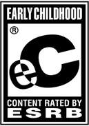
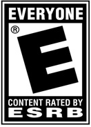
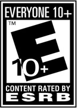
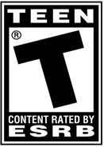
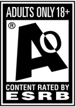

- EC- Early Childhood
- E- Everyone
- E10+- Everyone 10 and up
- T- Teen
- M- Mature 17+
- AO- Adults only 18+
.
.
EC/Early Childhood – Primera infancia
Juegos orientados para niños entre los 3 y 5 años, su temática es principalmente educativa.

E/Everyone – Todos
Su contenido está dirigido para todo público. Los juegos contienen un poco de animación, violencia fantástica, así como el uso de insultos suaves.

E 10+/Everyone 10 and up – Todos, mayores de 10 años
Todos, mayores de 10 años. Estos juegos contienen animaciones, fantasía, violencia e insultos leves.

T/Teen – Adolescentes
Su contenido está dirigido a jóvenes de 13 años en adelante, y se caracteriza por tener violencia, sugerencias sexuales, humor crudo, sangre, juegos de azar y uso de un lenguaje fuerte.

M/Mature 17+ - Edad madura
Estos videojuegos están restringidos para los menores de 17 años, ya que su contenido se caracteriza por mostrar explícitamente violencia, sangre, insultos y temas sexuales.
AO/Adults only 18+ - Solo para adultos.
Solo para adultos. Estos videojuegos son sólo para mayores de 18 años, su contenido tiene escenas prologadas de violencia, desnudez y temas sexuales.

Índice